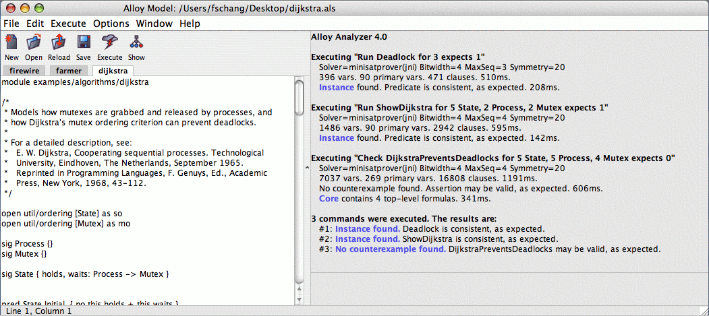
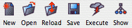
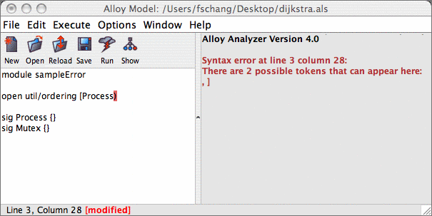
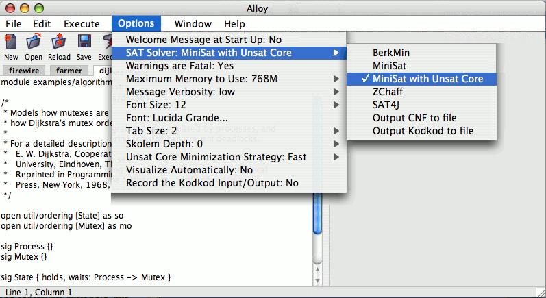

The Alloy Analyzer Layout
Here is a screenshot of the main window of the Analyzer:

Toolbar
The main toolbar of the Alloy Analyzer provides
quick access to the most commonly used operations:

- New
Creates a new text file in the editor.
- Open
Opens an existing Alloy model in the editor.
- Reload
For each file currently open in the editor, reload its content from the file system.
- Save
Saves the currently active model in the editor.
- Execute
Executes the most recently executed command.
Executes the first command from the file if no command has been executed so far.
- Show
Displays the most recent counterexample or instance.
Editor Panel and Message Panel
The user interface consists of the editor panel and the message panel.
The relative sizes of panels may be adjusted by clicking and dragging the split bars that separate the panels.
- Editor panel: contains a tabbed text editor for modifying Alloy models.
It supports tabbing so you can edit multiple text files simultaneously.
It also supports error highlighting during model compilation.
- Message panel: displays the results of analysis.
Each counterexample and each satisfying instance will have a clickable hyperlink.
Clicking on it will launch the Alloy Visualizer to display the counterexample or instance.
The message panel is also used for general status messages and error messages.
For example, if a model cannot be compiled, an error message is displayed,
and the error will be highlighted in the source Alloy model (see the figure below):

Options and Preferences
The preferences can be set by
clicking the Options menu (see the figure below):

- SAT Solver:
Alloy4 comes prepackaged with a selection of SAT solvers.
By default, the pure Java solver "SAT4J" is chosen since it runs on every platform and operating system.
If you require faster performance, you can try one of the native solver such as MiniSat or ZChaff.
But if MiniSat or ZChaff crashes due to platform or operating system incompatibility, then change the solver back to SAT4J.
- Warnings are Fatal:
By default, a model that contains one or more compilation warnings cannot be executed.
- Maximum Memory to Use:
The amount of memory to allocate for Alloy4; larger and more complicated models require more memory.
- Message Verbosity:
This controls how verbose the messages will be.
- Font Size:
This controls the font size in the editor panel and the message panel.
- Font:
This controls the font in the editor panel and the message panel.
- Tab Size:
This controls the tab size in the editor panel.
- Skolem Depth:
This controls the maximum depth of alternating universal-vs-existential
quantifier that we will permit when generating a skolem function.
If a formula exceeds this depth, we will not generate a skolem function for it.
- Unsat Core Minimization Strategy:
This controls the strategy used to minimize the unsat core.
The fast strategy performs no minimization at all.
The medium strategy uses a hybrid algorithm that attempts to reduce the core size.
The slow strategy guarantees that, at the logic level, the core is a locally minimum core.
- Visualize Automatically:
If this option is enabled, after executing any command,
the Alloy Analyzer will automatically load the visualizer
to visualize the counterexample or instance (if any).
- Record the Kodkod Input/output:
If this option is enabled, after executing any command,
then Alloy Analyzer will record the Kodkod input model generated for that command,
as well as the Kodkod solution correspoding to that command.